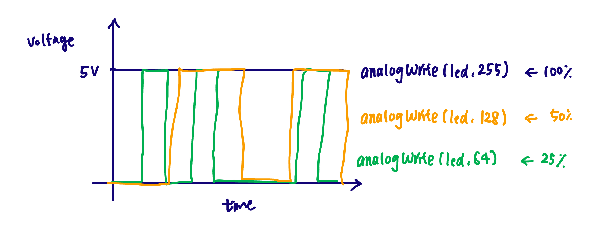

I work for a toy company, and the chief innovation officer wanted me to design a light up toy using at least three LEDs and a button (or a switch I make myself).
SCHEMATIC
For this assignment, I used three red LEDs (2V) and its own resistor so that each LED can be controlled independently. I used a 220Ω resistor for each LED.
Here's my calculation:
V_R = V_pin - V_LED = 5V - 2V = 3V
I = V_R / R = 3V / 0.02A = 150Ω
And then I rounded it up to 220Ω resistor which was provided in the kit. For button, I used a 10kΩ resistor to limit thr current because the value allows only a very small current to flow while still providing a stable signal to the Arduino input pin.
CIRCUIT
I used a button to toggle three LEDs so that all three turn on at once, and then two of them fade off.
The requirements for the code were to use analogWrite(), digitalWrite(), digitalRead(), and a for loop, including a fading effect on one LED.
// declare the pin numbers for three LEDs and Button
int firstLed = 3;
int secondLed = 5;
int thirdLed = 6;
int buttonPin = 2;
// button tracking + fade settings
int buttonState = 0;
int lastButtonState = buttonState;
int brightness = 255;
int fadeAmount = 5;
int clicks = 0;
void setup() {
// set the LED pins as an output:
pinMode(firstLed, OUTPUT);
pinMode(secondLed, OUTPUT);
pinMode(thirdLed, OUTPUT);
// initialize the pushbutton pin as an input:
pinMode(buttonPin, INPUT);
}
void loop() {
// read the current state of the button:
buttonState = digitalRead(buttonPin);
// detect a new press (LOW -> HIGH):
if (buttonState == HIGH && lastButtonState == LOW) {
clicks ++;
// if the number of click is odd, turn on all three LEDs
if (clicks % 2 != 0) {
analogWrite(firstLed, brightness);
analogWrite(secondLed, brightness);
analogWrite(thirdLed, brightness);
}
// even click, fade 2nd/3rd LED out, keep 1st off
else {
// loop to gradually reduce brightness to zero
while (brightness > 0) {
// decrease the brightness by fadeAmount
brightness = brightness - fadeAmount;
// Turn off the first LED completely
digitalWrite(firstLed, LOW);
// Set the second and third LED to the current brightness
analogWrite(secondLed, brightness);
analogWrite(thirdLed, brightness);
delay(30); // pause to control fade speed
}
// reset the brightness back to max
brightness = 255;
}
}
// save the current button state for next loop
lastButtonState = buttonState;
}
ADDITIONAL QUESTIONS
1: Draw a chart where the X axis is time and the Y axis is voltage. Draw 3 lines representing the voltage across an LED with analogWrite(led, 64), analogWrite(led, 128), and analogWrite(led, 255).

The chart shows PWM signals for three analogWrite values. For analogWrite(64), the voltage stays at 5V for a short period and OV for most of the time, for analogWrite(128), its evenly between 5V and 0V. For analogWrite(255), which is a full brightness, the voltage remains at 5V constantly.
2: If all your LEDs were on simultaneously, what would the total current draw be? Is this above or below the total Arduino current draw limits? If all your LEDs were on, how long would your circuit run if powered by a 1200 mAh battery?
Let's calculate a current per LED first. If I say all my LEDs are red with a 220Ω resister and a 5V Arduino, I = (5V-2V) / 220Ω = 3/220 = 13.6mA. Therefore, total current when all 3 red LEDs are on at once would be 3*13.6 = 40.9mA, which is still below the overall I/O current limits. So if powered by a 1200mAh battery, my circuit will run around 1200mAh / 40.9mA = 29.3 hours.
3: Measure and record the actual voltage across one of your LEDs when it's on. How does this compare to the theoretical forward voltage for your LED color?
When I measured the actual voltage across my red LED, it was around 1.9V. This is slightly lower than the theoretical forward voltage of a red LED (2.0V), which make sense because I used a 220Ω resistor instead of the calculated 150Ω.
4: Did you use AI tools in completing this assignment? If yes, please provide details on how/when, as well as a brief reflection. If no, you can either leave this question blank, or provide other information if you'd like.
Yes. I used ChatGPT to check grammar and refine sentence structure.